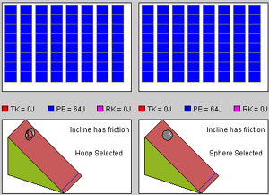
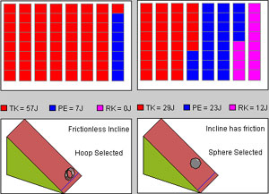

Instructions
This page is designed to get you started using the applet. The applet should be open. The step-by-step instructions on this page are to be done in the applet. You may need to toggle back and forth between instructions and applet if your screen space is limited.
 Observing Energy Changes During a
Race
Observing Energy Changes During a
Race
Reset  the
applet.
the
applet.
On the left incline, select the hoop and on the right incline the sphere. Click the Friction buttons under each incline, so that each incline has friction. Figure 1 below shows what you should be able to see.

Figure 1
Both the hoop and the sphere each have 64 J of gravitational potential energy, represented by 64 blue squares each, and no kinetic energy. The zero of the potential energy is at the bottom of the incline. So when an object makes it to the bottom of the incline, there should be no blue squares left for that object.
Verify this by clicking Play  and letting the motion continue until both
objects have moved past the finish line.
and letting the motion continue until both
objects have moved past the finish line.
Then click Rewind  and click Play again. Which object wins the
race?
and click Play again. Which object wins the
race?
Notice that a small flag is raised at the finish line that is crossed first, and that the color of either finish line changes from blue to green when an object passes the line.
Click Rewind. Deselect the Friction checkbox for the left incline with the hoop, so that the incline is now frictionless. Don't change anything on the right incline. Play the motion again. Which object wins the race this time?
Click Rewind, and Play the motion once more. Observe the yellow dots painted on the hoop and sphere as the objects move down the incline. Which of the two objects is rolling, which one sliding down the incline?

Click Rewind. The left incline should be frictionless and have the hoop on it, and the right incline should have friction and have the sphere on it.
Have another look at Figure 1 above or at the applet. The applet displays three kinds of energy: potential energy (PE), translational kinetic energy (TK), and rotational kinetic energy (RK). These are color-coded blue, red, and magenta, respectively. The amounts of each kind of energy for each of the two incline-systems are displayed in the grey area above the inclines in 1-J chunks, represented by colored blocks. At the start, all energy blocks are blue (PE) because all kinetic energies are zero.
Play the motion and then click Pause  before the hoop reaches the
finish line. You should something like Figure 2 below.
before the hoop reaches the
finish line. You should something like Figure 2 below.

Figure 2
Notice that the hoop, which is sliding and not rolling, has most of its potential energy converted into translational kinetic energy and no rotational kinetic energy at all. The sphere, however, which is rolling and has not moved as far as the sliding hoop, has less potential energy converted into kinetic energy, and the kinetic energy is now split into translational and rotational parts. There is more translational than rotational kinetic energy.